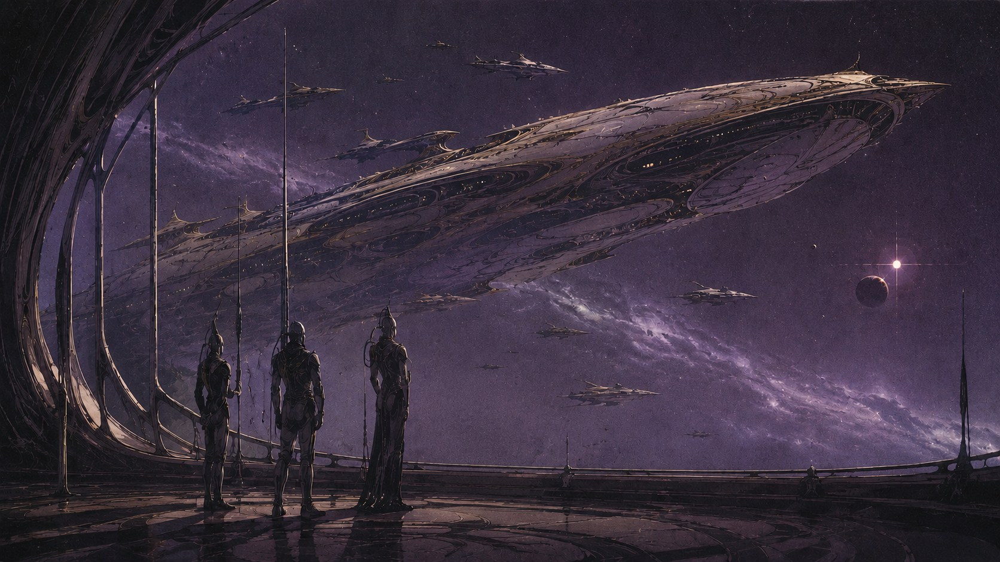

06 / 06 · Nomaden · Flotte von Aethyr
Aeldir
Sie verloren ihre Welt — nicht ihre Richtung.
Übersicht
Heimatwelt Aethyr umkreiste einen Stern, dessen Instabilität die klügsten Köpfe der Aeldir schon lange vor dem eigentlichen Kollaps voraussagten. Anders als die Menschheit, die dem Tod der Erde weitgehend hilflos gegenüberstand, hatten die Aeldir dadurch entscheidenden Vorlauf: Über einen Zeitraum von rund dreißig bis vierzig Jahren wurde fieberhaft an der Technologie für gigantische Kolonieschiffe getüftelt.
Kein Krieg, keine Schuld, kein plötzlicher Kollaps — ein absehbares, kosmisches Ereignis, dem mit Weitsicht statt Verzweiflung begegnet wurde. „Elfen“ ist eine menschliche Fremdbezeichnung; die Eigenbezeichnung ist Aeldir.
Der Exodus
Noch vor dem eigentlichen Aufbruch hatten die Aeldir bereits herausgefunden, dass in der Nachbargalaxie bereits Leben existiert. Der Aufbruch erfolgte damit nicht blind ins Ungewisse, sondern zielgerichtet. Den Aeldir war bewusst, dass sie, falls nötig, auch zum Mittel der Unterwerfung eines bereits besiedelten Planeten hätten greifen können — dieses Wissen wurde nie verschwiegen, sondern war Teil ihres nüchtern-pragmatischen Selbstverständnisses. Am Ende kam es jedoch nicht dazu.
Von der ursprünglichen Kolonieflotte erreichte am Ende nur ein einziges, gigantisches Kolonieschiff die neue Galaxie, begleitet von kleineren Begleitschiffen. Bei ihrer Ankunft sahen die Aeldir bereits, in welchem Zustand sich diese Galaxie befand — und entschieden sich bewusst gegen eine Eroberung. Seit der Ankunft leben sie nomadisch auf ihrem Kolonieschiff und dem Schwarm kleinerer Begleitschiffe.
Status im Reich
Kein Sklavenvolk wie die Menschen, sondern respektierte, tributpflichtige Klienten — Ergebnis eines diplomatischen Abkommens am Ende des Elfenkriegs, nicht einer militärischen Niederlage. Zwei Gründe tragen diesen Sonderstatus: Die Nyxaren schätzen die Aeldir für ihre erhabene, stolze Art — Stolz erkennt Stolz. Ganz pragmatisch: Das Blut der Aeldir ist für die Nyxaren unbrauchbar — weder als Nahrung noch als Sakrament.
Die Aeldir zählen zu den maßgeblichen Gründungsvölkern des Dominat und tragen bis heute aktiv zur Aufrechterhaltung des brüchigen Friedens bei.
Gesellschaft
Nach außen wirkt die Zurückhaltung der Aeldir gegenüber der Nyxaren-Herrschaft oft wie bloße Gleichgültigkeit. Tatsächlich verbirgt sich dahinter aber eine aktive, diplomatische Haltung: Frieden und Stabilität im Dominat zu sichern, ohne sich selbst in den Vordergrund zu drängen. Diese Distanziertheit wirkt auf andere Völker dennoch oft wie Arroganz.
Alt, verlustreich, in sich selbst nach dem Verlust der Heimat neu sortierend — nach außen stolz und unnahbar, nach innen möglicherweise brüchiger, als sie zugeben.
Physiologie & Erscheinung
Schlank, hochgewachsen, von eher zierlicher Statur — die Aeldir sind körperlich das schwächste der bekannten Völker. Aschgrau-bläuliche, fahle Haut. Um diese körperliche Schwäche auszugleichen, trägt praktisch jeder Aeldir im Alltag ein mechanisches Exoskelett — quasi eine zweite Haut.
Die Ausführung ist stark kastenabhängig: Handwerker tragen vergleichsweise einfache, funktionale Rahmen, während Krieger in gewaltigen, für den Kampf ausgelegten Anzügen stecken.
Kasten
Die Aeldir-Gesellschaft war schon auf Aethyr, lange vor dem Exodus, in ein festes Kastensystem gegliedert — kein Produkt der Reise, sondern altes, selbstverständliches Ordnungsprinzip. Die Einteilung erfolgt nach Funktion, nicht nach Blutlinie. Die Kastenzugehörigkeit ist von Geburt an festgelegt; ein Wechsel gilt als äußerst schwierig.
🔶 Fähigkeiten-Entwurf — noch nicht final abgenommenGelehrte
Wissenschaft, Geschichte, Auswertung des auf den Reisen gesammelten Wissens.
- Archiv des Verlusts — Bonus auf Wissen zu vergangenen Ereignissen.
- Klarer Geist — Bonus auf Disziplin gegen Verwirrung/Täuschung.
Krieger
Verteidigung und alles Militärische, in den größten Exoskelett-Anzügen.
- Erhabene Klinge — Bonus auf Nahkampf mit traditionellen Waffen.
- Unbewegt — Resistenz gegen Einschüchterung.
Handwerker
Erbauer und Erhalter der Schiffe, mit einfacheren Arbeits-Exoskeletten.
- Präzisionsarbeit — Bonus auf Technik bei filigranen Reparaturen.
Diplomaten / Sprecher
Kontakt nach außen, zu anderen Völkern und zum Dominat.
- Distanzierte Würde — Bonus auf Überzeugung gegenüber anderen Völkern.
Dienende
Einfache Arbeiten an Bord, unterste Kaste, ohne religiöse Überhöhung.
- Stille Effizienz — Bonus auf Fingerfertigkeit bei alltäglichen Aufgaben.
Noch in Arbeit
Für die Aeldir sind Religion, detaillierte Militärstruktur, Sprache & Namen, eine Schlüsselfigur und der Blick nach außen noch offene Punkte der Lore-Entwicklung.